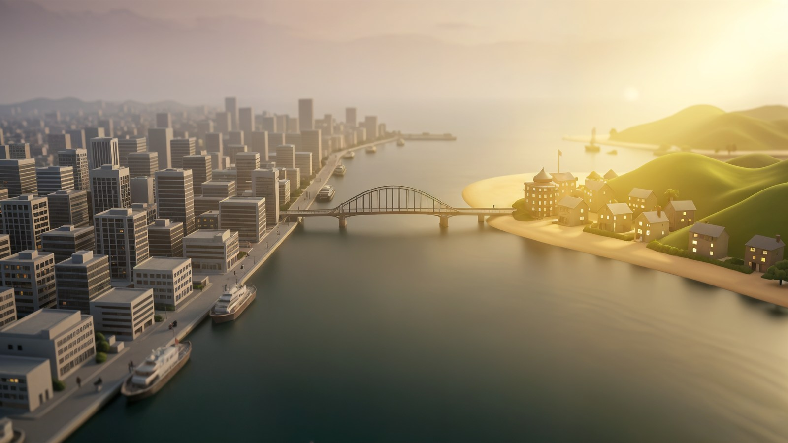
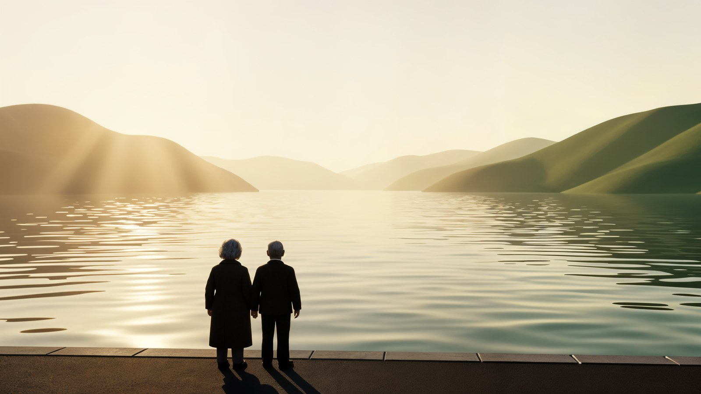
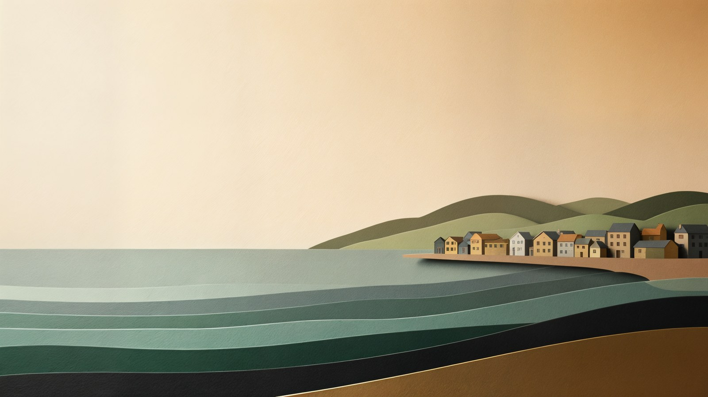

A — 換場微縮模型 （現時線上版本）
左邊冷灰密集城市 → 右邊暖陽海岸小鎮，一條橋橫跨靜水連接兩邊。3D 微縮模型＋移軸景深。

大灣區．第二人生
第二人生，
第二人生，
不是退場，是換場。
退休、置業、醫療 —— 一小時生活圈的完整安排。
為考慮在珠海、中山生活的香港家庭而設。
B — 長者背影望海
兩位長者背影站在海濱步道，金色低角度陽光，遠山層疊。情緒最強。

大灣區．第二人生
第二人生，
第二人生，
不是退場，是換場。
退休、置業、醫療 —— 一小時生活圈的完整安排。
為考慮在珠海、中山生活的香港家庭而設。
C — 紙雕層次海景
分層剪紙的海浪、遠山與村落，暖米色大留白。最安全、文字最易讀。

大灣區．第二人生
第二人生，
第二人生，
不是退場，是換場。
退休、置業、醫療 —— 一小時生活圈的完整安排。
為考慮在珠海、中山生活的香港家庭而設。
快速對比
A 換場微縮模型
- 3D 立體感：最強
- 直接畫出 punchline「換場」
- 橋 = 過渡的象徵
- 無人物，最中性
B 長者背影望海
- 情緒：最強
- 直接對應受眾（長者）
- 帶少許孤獨感 → 需配文案中和
- 人物細小、背對鏡頭
C 紙雕層次海景
- 文字最易讀
- 留白最多
- 最 calm、最設計感
- 3D 感偏平面層次